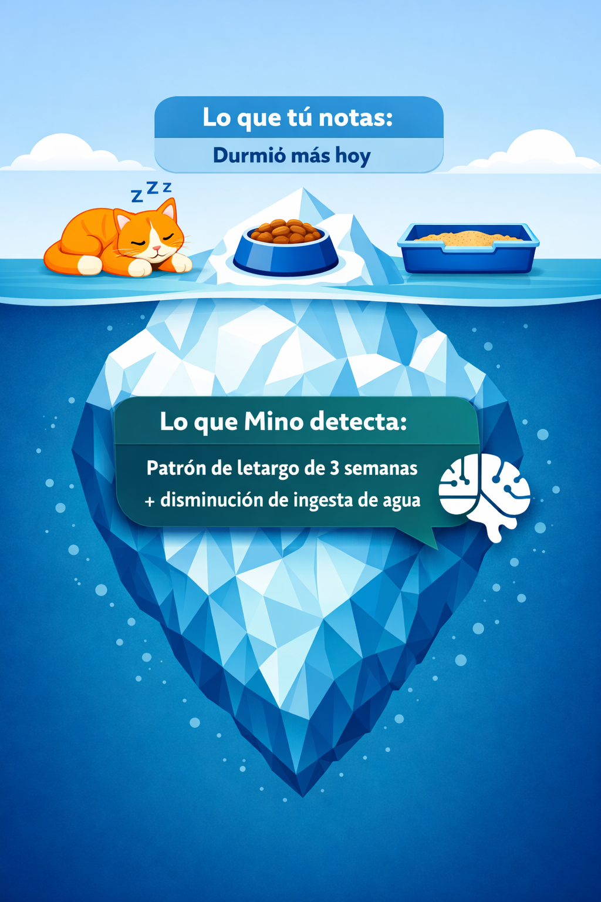

Mino

La salud de tu michi no debería ser un misterio.
Lleva una bitácora funcional para detectar síntomas silenciosos y prueba nuestra IA experimental.
Bitácora visual
IA Sweete
Dueños Fundador
Nuestra historia
El amor que inspiró la prevención
Los gatos son expertos por naturaleza en ocultar su dolor. Para cuando nosotros notamos que algo anda mal, a veces es demasiado tarde (una lección que aprendimos de la manera más dura con nuestra gatita Sweetie).
Mino no es solo una app, es el traductor de tu michi.
Es una bitácora inteligente donde registras fácilmente sus hábitos diarios. Tú solo anotas si comió diferente, si durmió más o si cambió su rutina en el arenero. Mino analiza ese historial en el fondo y encuentra las correlaciones invisibles para alertarte de posibles problemas (como el fallo renal) mucho antes de que sean una urgencia.
Empieza a prevenir hoy